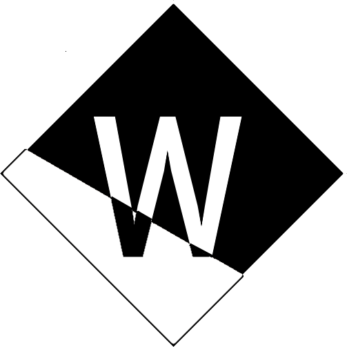
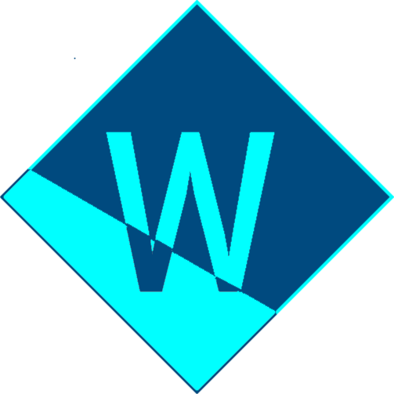
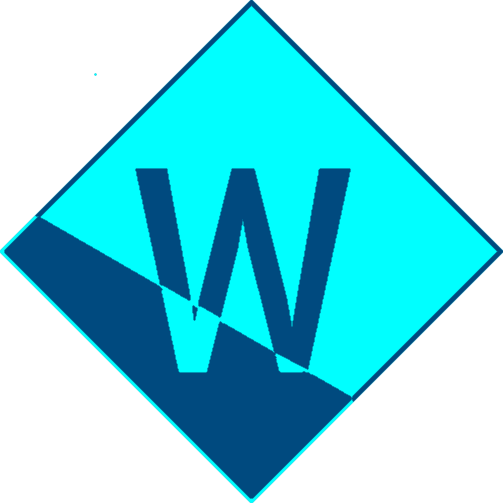
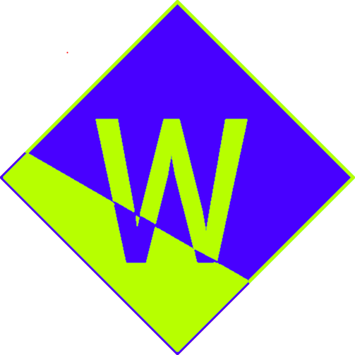
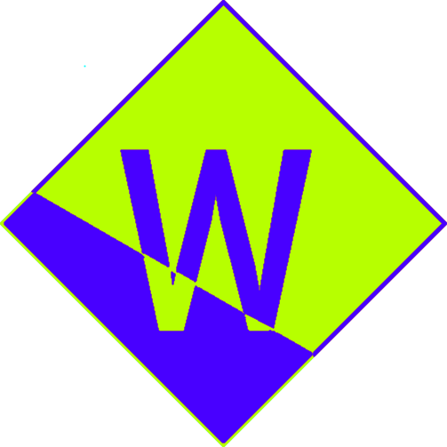
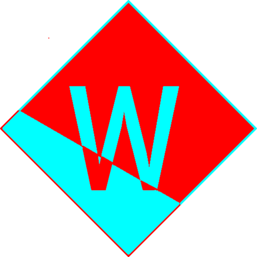
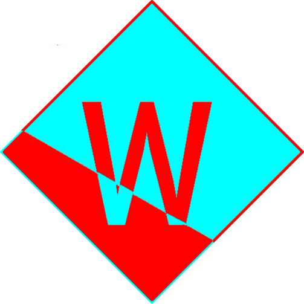

¡Ojo a los logos! Si alguien dice ser yo pero no usa ninguno de estos logos está mintiendo







¡Hola 👋!
Me llamo Wernasho, soy un joven apasionado por la programación.
A pesar de mi corta edad, me encanta desarrollar todo tipo de cosas.
Por el momento, he desarrollado...
- Apps de consola (La gran mayoría de mis proyectos)
- Apps web (Por el momento ninguna es púbblica.)
... Pero estoy empezando a darle un ojo a las aplicaciones de escritorio.
Por el momento, desarrollo mayormente con Python, aunque no es el único lenguaje que conozco.
Más información sobre mi stack completo y camino en la programación
Aquí.